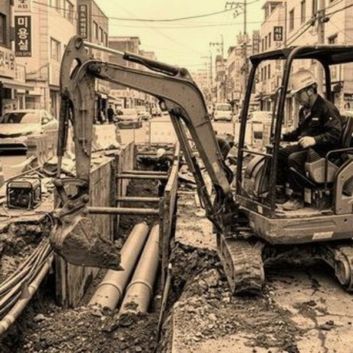
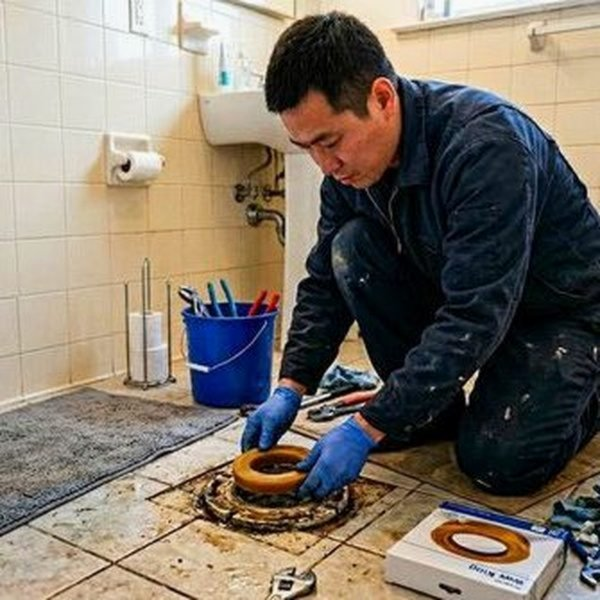
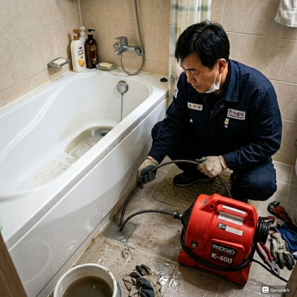

제우스시설관리 | 2025년 4월

겨울철 배관 동파는 응급 상황입니다. 방치하면 누수로 인한 대규모 손상이 발생할 수 있습니다. 동파 발생 후 신속한 대처가 가장 중요합니다.
물은 0℃에서 얼지만, 배관 내 물은 더 낮은 온도에서도 얼 수 있습니다. 특히 실내에서 난방이 되지 않는 아래 부분 노출 배관, 창문 근처, 외부 벽면 배관이 위험합니다. 가장 흔한 원인은 장기간 외출 시 난방을 끄거나, 극저온 날씨에 유지 보수 부재입니다.
동파 신호:
• 수돗물이 나오지 않거나 매우 약함
• 배관에서 얼음 결정 확인
• 배관 연결부에서 물이 새고 있음
응급 조치 (동파 확인 후 30분 이내):
1️⃣ 메인 수도 밸브 차단 (추가 손상 방지)
2️⃣ 온풍기 또는 헤어드라이어로 25~40℃ 온풍을 배관에 불어줌
3️⃣ 따뜻한 수건을 감싼 후 온열팩 적용
4️⃣ 난방 온도를 20℃ 이상으로 설정
⚠️ 주의: 끓는 물을 붓지 마세요. 급격한 온도 변화로 배관이 파열될 수 있습니다.
1단계: 손상 정도 진단
동파가 풀린 후에도 물이 나오지 않으면, 배관이 실제로 파열되었을 가능성이 높습니다. 제우스시설관리는 내시경 카메라로 정확한 손상 위치와 정도를 파악합니다.
2단계: 손상된 배관 구간 결정
• 부분 파열: 해당 연결부만 교체
• 전체 파열: 배관 일부 또는 전체 교체
3단계: 배관 교체
손상된 부분을 제거하고 새로운 배관으로 연결합니다. 사용 재료는 구리, PVC, 스테인리스 등 상황에 맞춰 선택합니다.
4단계: 수압 검사 및 누수 확인
복구 후 모든 연결부에서 누수가 없는지 확인합니다.
5단계: 보온 강화
동파 재발 방지를 위해 그 부분 배관에 보온재를 감깁니다.
✓ 겨울철 외출 시에도 난방을 15℃ 이상 유지
✓ 노출된 배관에 보온재 감싸기
✓ 물을 자주 사용하여 배관 내 흐름 유지
✓ 온수기 단열 강화
✓ 극저온 예보 시 수도꼭지 조금 열어두기

